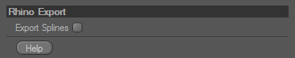

Rhino Import/Export
Version 1.1 for CINEMA 4D R12rhino.io is an Import/Export plugin for Rhino scenes using the OpenNURBS toolkit. It requires CINEMA 4D R12 or higher and can read Rhino files up to version 5. Rhino files exported through rhino.io will be saved as Rhino Version 4 files, so they can be read by Rhino 4 and 5. The most up to date information can be found on the official support website.
Installation
You can always download the most recent versions of rhino.io for CINEMA 4D from the support website. The Zip-File contains both, the windows version and a Universal Binary for Mac OS X.
After downloading the rhino.io Zip-File, unzip it and copy the folder into the 'plugins' folder of your CINEMA 4D application directory. The screenshots below show the correct locations for Windows and Mac OS X users respectively.


Obtaining a License
After you installed rhino.io as a CINEMA 4D plugin, you need to obtain a rhino.io license. This license is generated based on the rhino.io serial you received on purchase, as well as the CINEMA 4D serial of the installation you want to use rhino.io with. Do not use the temporary CINEMA 4D serial you get on purchase of CINEMA 4D, but the final number you get after registering with MAXON.
The easiest way to get your license code, is to start CINEMA 4D with the plugin installed. It will complain about the missing rhino.io license and bring up the Register window. Ignore this by pressing cancel, CINEMA 4D will continue to load. In the Plugins Menu you will find an entry called Register rhino.io. Clicking this entry will bring up the registration website with most of the info already filled in from what you entered in CINEMAs Register window. Finish filling out this form and click submit. The license will then be sent instantly to the e-mail adress you supplied.
You can also directly visit the registration website here: www.rhino.io/register/. If there are any problems with obtaining a license, please check the support website or send an e-mail to info@rhino.io.
Rhino Import
General Operation
The Rhino Importer will load Rhino Mesh Objects as they are, but it is unable to tesselate NURBS Objects. Rhino can, however, store Render Meshes with NURBS objects in a 3dm file, which are then used for import. These meshes are created by Rhino automatically as long as they have at least once been rendered or drawn into the viewport in shaded mode. Also make sure the Save Small flag is not checked when the file is saved. Some other applications using the 3dm file format may not automatically store Render Meshes with the file, so in that case you will have to explicitly tesselate them or go through Rhino first. When a NURBS/Brep object without render meshes is encountered in the rendered file, a warning message is issued.
For proper import, you can convert NURBS objects into meshes within Rhino manually before you import them into CINEMA 4D. Otherwise you need to have the tesselation settings set correctly. Check this either in the global Rhino Options under Render mesh quality or individually in the Render mesh setting of an object.
The exact behaviour of the Rhino Import is guided by a number of settings, which come up every time a file is imported and can always be found under Edit -> Preferences -> Import/Export -> Rhino (*.3dm) Import.
Import Options
Document Scale determines how the Rhino model is scaled on import. For both cases the geometry is read from the Rhino file as is and the CINEMA 4D Document Unit is set accordingly. It defaults to From Rhino File, which just sets the CINEMA 4D document unit to be whatever the unit is in the imported file. Custom will set the document unit to whatever you chose in the line below. Keep in mind that if you merge a Rhino file into another document, the objects will be scaled from the unit in the file or you specify to the unit of the document you merge into.
Import Layers controls how Rhino layers are imported. It defaults to As Layers, meaning Rhino Layers are directly converted to CINEMA layers. For certain workflows it might be more appropriate to import layers as Null Objects and group all objects on the layer (and sublayers) thereunder. This is what As Groups does. Layers, that have no content, will never be imported.To completely ignore layers, set this option to Off.
If you want to Create Materials from Rhino materials, set this option to From Rhino Materials. It is also possible to have materials created From Layer Colors. If you do not want any materials to be created, set this option to Off.
Clean Up Materials will remove any unused or duplicate material from the Rhino scene. Unused materials can come from objects that the Rhino Importer doesn't import, duplicate materials often happen when several objects have materials with identical settings applied.
Import Mesh Objects specifies whether Rhino Meshes are imported. If it is not checked, they are ignored on import.
When Import Render Meshes is checked, the Render Meshes stored with NURBS objects are imported. This is the way you will probably import most of your data, since the NURBS objects can not be imported directly.
It is possible to have Rhino Groups imported as Selection Objects. If you want this to happen, make sure Import Groups is checked.
Import Cameras controls whether Named Views from Rhino are imported as Cameras.
Import Lights defines if light sources are imported from Rhino. Be aware, that for lights defined as camera space lights in Rhino, position and orientation may not match!
If Skip Invisible Objects is checked, the importer will ignore all hidden objects, otherwise they are imported and flagged as hidden within CINEMA 4D.
Import Curves will cause NURBS Curves and Polylines in the Rhino file to be imported as Spline Objects, when checked. While Polylines can be converted precisely, NURBS Curves will be automatically tesselated creating as many Intermediate Points per span as you specify.
Objects in Rhino usually consist of separate NURBS patches, that are often joined at patch boundaries or trim curves. These patches are tesselated independently from each other, which causes duplicate vertices to be created at patch or trim boundaries. When working with these objects in CINEMA 4D, this is often a waste of resources and can be inconvenient when editing the model or applying texture coordinates. It is possible to use the Optimize command after import. Checking the Merge Overlapping Points checkbox does the same thing on import. When the checkbox is checked Threshold defines the maximum distance two points can have to be considered the same.
In Rhino objects do not have an axis associated with them, so normally the objects would import with all their Axes at the origin. If Axis Center Objects is enabled, every objects axis is moved to the center of the contained points.
Merge
When Merge is used to open a Rhino file, the importer checks if any objects that have been imported previosly from the same model already exist in the current CINEMA 4D scene. If that is the case, a dialog window pops up, asking you if you just want the model to be updated with the changes you made to the Rhino model. If you choose to do so, changes to objects will be applied to the existing objects in CINEMA 4D, everything else (like material or layer reassignements or regrouping of the objects in the object manager) will stay intact.
Rhino attaches unique IDs to all objects and layers. You can see this ID within Rhino by clicking on Details in the Object Properties Tab. On import, this ID is stored with the objects and layers (or groups) in CINEMA 4D, so they can be looked up later. When the scene is updated, the importer checks if any object in the merged Rhino file already exists in the CINEMA scene and updates the geometry. There are a few things to keep in mind, though:
- If an object has been removed within CINEMA, but still exists in the Rhino scene, it will be imported again. If you don't want this to happen you could e.g. hide the object and choose Skip Hidden Objects in the import settings.
- Some operations in Rhino (e.g. Join, Explode, Extract) don't keep the object ID intact. In that case, the importer doesn't know how the objects relate and imports the object anew.
- If an object is imported that didn't exist previously, the importer tries to put it inside the same layer or group, as long as the layer or group already exist. New layers do not get added.
- Some attention has to be paid on import settings when updating a scene. If e.g. a scene has been originally opened with layers imported as groups and, on merge, layer import is set to import as CINEMA 4D layers, new objects will not be sorted into the existing groups, because the importer looks for existing layers in the CINEMA 4D layer list.
Vertex Colors

If Vertex Colors are available, rhino.io imports them by creating one Vertex Map for each channel. These are named according to the color which they represent.
The file vertex_color_shader.c4d in the examples folder shows a possible application, where a material uses a Layer Shader to combine the three colors. Each layer is built by a Colorizer Shader with a specific color and the corresponding Vertex Map assigned.
Rhino Export
General Operation
A layer called Default is created always, all objects that have no layer assigned in cinema, are assigned to that layer on export.
The exporter uses viewport visibility, not render visibility, to set Rhino layer visibilities
For advanced users: Be aware that exporting polygon meshes will not retain vertex order. Rhino can not represent discontinous texture coordinates or normals and the mesh will be processed so that vertices can be split up in those cases. This has the downside that vertex count and order will, in most cases, be different.
The Document Unit always also gets stored in the Rhino file.
The exact behaviour of the Rhino Import is guided by a number of settings, which come up at the time of export and can always be found under Edit -> Preferences -> Import/Export -> Rhino (*.3dm) Export.
Export Options

If Export Splines is checked, any Spline Objects found in the scene are exported as polylines. If the box is not checked, Spline Objects are ignored.
Disclaimer
The rhino.io Import/Export Tools have been created in cooperation between LAUBLab KG and Timm Dapper and are Copyright (C) 2009-2011 Timm Dapper
Rhino and OpenNURBS are Trademarks of Robert McNeel & Associates. The OpenNURBS toolkit is copyright (C) 1993-2007 Robert McNeel & Associates. All Rights Reserved.
MAXON and CINEMA 4D are registered Trademarks of MAXON Computer GmbH.